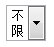

RT1007: 'word-wrap:break-word' 只有在 WebKit 浏览器中对 SELECT 元素上的文字有效
标准参考
'word-wrap' 特性是在 W3C CSS Text 3 草案中规定的，这个特性指定了当一个一般情况下不可截断的字符串要适应行框的时候 UA 是否截断一个单词以阻止溢出。 'word-wrap' 应用在所有元素上，它的可用值有 'normal' 和 'break-word'。
当一个元素的 'word-wrap' 特性值为 'break-word' 时，UA 会在必要时截断并在新行显示被截断内容。
关于 'word-wrap' 特性的详细内容，请参考 W3C CSS Text 3 5.2 Force Wrapping: the 'word-wrap' property 。
问题描述
在 IE6 IE7 IE8 Firefox 中，'word-wrap:break-word' 作用于 SELECT 元素上时，SELECT 上的文字将不换行并隐藏部分显示， 而在基于 Webkit 的 Chrome Safari 中，SELECT 上的文字会换行。
造成的影响
对于设置了 'word-wrap:break-word' 的 SELECT 元素上显示的文字在各浏览器下表现不同。 在 IE6 IE7 IE8 Firefox 下 SELECT 上的文字不折行显示，而是隐藏部分显示；而在 Chrome Safari 中折行显示。
受影响的浏览器
| Chrome Safari |
|---|
问题分析
对于此问题，我们通过以下的测试用例来说明，分析以下代码：
<select style="width: 40px;word-wrap:break-word;">
<option value="0">不限</option>
</select>
SELECT 元素设置了 'width:50px' 以使文字能折行显示。各浏览器中表现如下：
| IE6 IE7 IE8 | Firefox | Chrome Safari |
|---|---|---|
 |
 |
 |
解决方案
不在 SELECT 元素上设置 'word-wrap:break-word;'，并尽量为 SELECT 元素设置合适的宽度。
参见
知识库
相关问题
测试环境
| 操作系统版本: | Windows 7 Ultimate build 7600 |
|---|---|
| 浏览器版本: |
IE6 IE7 IE8 Firefox 3.6.2 Opera 10.54 Chrome 5.0.360.0 dev Safari 4.0.5 |
| 测试页面: | |
| 本文更新时间: | 2010-07-19 |
关键字
word-wrap break-word SELECT